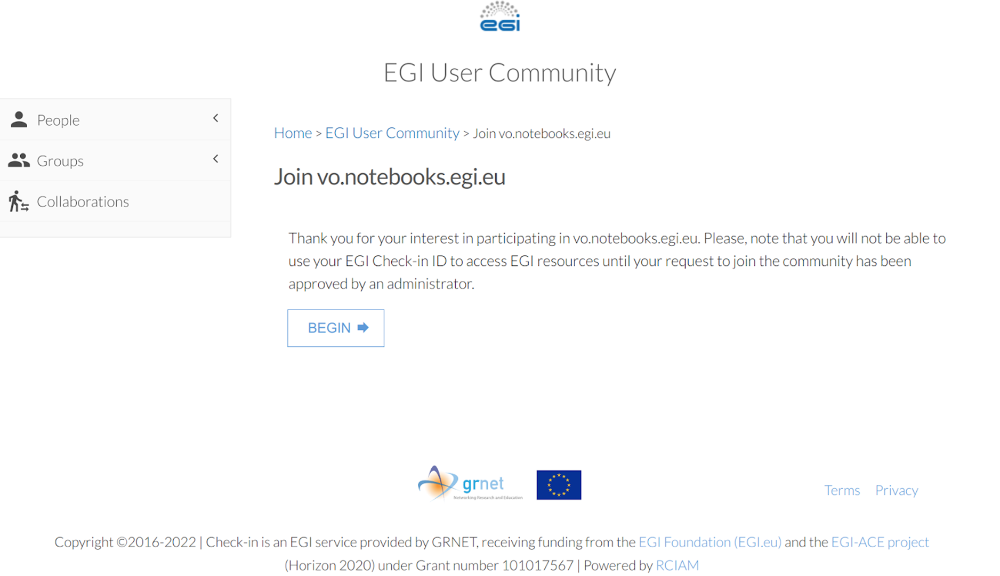
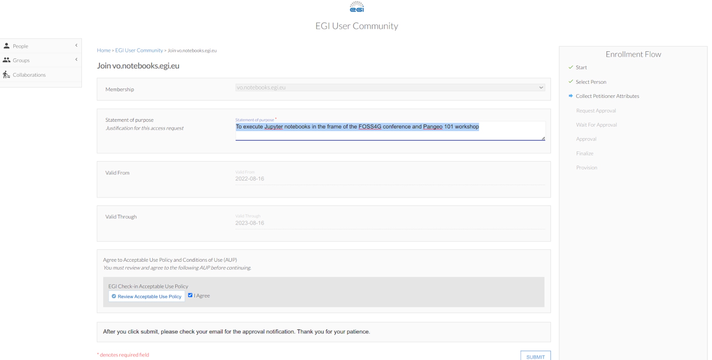

Setup: how to run the tutorial
Contents
Setup: how to run the tutorial#
This tutorial’s goal is to provide a wide introduction to the Pangeo ecosystem. While participants will see all the core libraries and possibilities offered by the Pangeo software ecosystem, it is also important that they get some insights about what a Pangeo platform is and how to use it. This is why we put in place such a platform on top of EOSC federation thanks to provider CESNET. We recommend running this tutorial using the EOSC/CESNET infrastructure, which is mainly a Dask-gateway enabled Jupyterhub offering some pre-cooked software environment. For more details on this deployment, you may want to take a look at Daskhub helm chart.
This page will describe two ways of running the tutorial:
Through EOSC resources (recommended)
Locally on your personal computer
Running the tutorial on the European Open Science Cloud (EOSC)#
First, before the eScience Course, all the participants will have to create an EGI account and enroll to the Virtual Organisations to have access to EOSC Pangeo JupyterHub and EOSC Pangeo storage.
There are several steps to follow: First two steps use EGI development instance to activate your access to pangeo-eosc jupyter hub. Last two steps are there to activate access to pangeo-eosc object storage.
sign up for an EGI account (Development egi instance:aai-dev ) by clicking on : https://aai-dev.egi.eu/registry/co_petitions/start/coef:2. Use your ORCID account to authenticate or social media account e.g. GitHub.
Enroll in the development instance in the “vo.pangeo.eu” Virtual Organisation by clicking on: https://aai-dev.egi.eu/registry/co_petitions/start/coef:290. This will take you to the website shown on the Figure  and then to . For the latter e.g. when asking to join the EGI VO pangeo, in the “statement for purpose” simply write “To execute Jupyter notebooks during eScience Course as student (or mentor)”. Review and agree on the policy and click on “Submit”.
sign up for an EGI account (Production EGI instance:aai) by clicking on : https://aai.egi.eu/registry/co_petitions/start/coef:2. Use your ORCID account to authenticate or social media account e.g. GitHub.
Enroll to the vo.pangeo.egi.eu VO by clicking on https://aai.egi.eu/registry/co_petitions/start/coef:386. This will take you to the website shown on the Figure and then to . For the latter e.g. when asking to join the EGI VO notebook, in the “statement for purpose” simply write “To execute Jupyter notebooks during eScience Course as student (or mentor)”. Review and agree on the policy and click on “Submit”.
Note
It is important to perform all these steps as early as possible in order for managers of the Virtual Organisations to approve your petitions to join.
Once your enrollments have been validated, you may need to log out from EGI Check-in to refresh your account. If you have any trouble, request help by filling an issue before the bootcamp. Someone will assist you with the setup.
To access the Pangeo EOSC JupyterHub, you need to click on this link to open a Jupyterlab on the correct folder for the tutorial.
Under the hood, this will clone the https://github.com/pangeo-data/escience-2022 repository and put you in the correct folder for executing our tutorial.
From there, you can open and execute any notebooks used during the workshop, enjoy!
Alternatively, you can also open notebooks one by one from the PANGEO 101 section of this Jupyterbook by clicking on the rocket icon 🚀 on top of the notebook and choosing Jupyterhub option.
Note
After the eScience Course, you can continue to use the resources, but note that we would probably modify the service and things might not work from time to time. We would appreciate you get in touch with us to give us some feedback and be informed of the platform evolution. You can do this through Github Discussions.
You can also contribute to “the Pangeo show and tell” online meetups.
Running on your own computer#
Most parts of this tutorial were designed to run with limited computer resources, so it is possible to run on your laptop. It is a bit more complicated as you will have to install the software environment yourself. Also you will not be able to test real cloud distributed processing with Dask gateway.
Steps to run this tutorial on your own computer are listed below and demonstrated through Linux commands only:
git clone the escience-2022 repository.
git clone https://github.com/pangeo-data/escience-2022.git
Install the required software environment with Conda. If you do not have Conda, install it by following these instructions (see here). Then create the environment, this can take a few minutes.
conda env create -n escience -f escience-2022/.binder/environment.yml
Launch a Jupyterlab notebook server from this environment.
conda activate escience
jupyter lab
Open a web browser and connect to the Jupyterlab provided URL (you should see it in the jupyter lab command outputs), something like: http://localhost:8888/lab?token=42fac6733c6854578b981bca3abf5152.
Navigate to escience-2022/tutorial/pangeo101/ using the file browser on the left side of the Jupyterlab screen.
Running using a Binderhub deployment#
Binderhub is a cloud service that allows users to share reproducible interactive computing environments from code repositories. It is generally used to enable other users to easily run your own code through Jupyter notebooks. It is a really cool service offered for free by several organisations (MyBinder through Jupyter, GESIS, etc.).
It is probably the easiest way to execute notebooks in this repository, as you only have to do one click to arrive in a Jupyterlab with all the necessary libraries. However, the hardware resources of the public BinderHub are quite small, so you will not be able to grasp the full potential of the Pangeo software stack, and parts of the notebooks will be unavailable.
All the notebooks on the PANGEO 101 section, for example “Handling multi-dimensional arrays with xarray” have a rocket icon 🚀 at the top, from which you can select the Binder button to just run this notebook on the GESIS Binder service.
Alternatively, you can also directly click on the below buttons:
GESIS:

MyBinder:

You will then have to navigate to the escience-2022/tutorial/pangeo101/ folder using the file browser on the left side of the Jupyterlab screen.